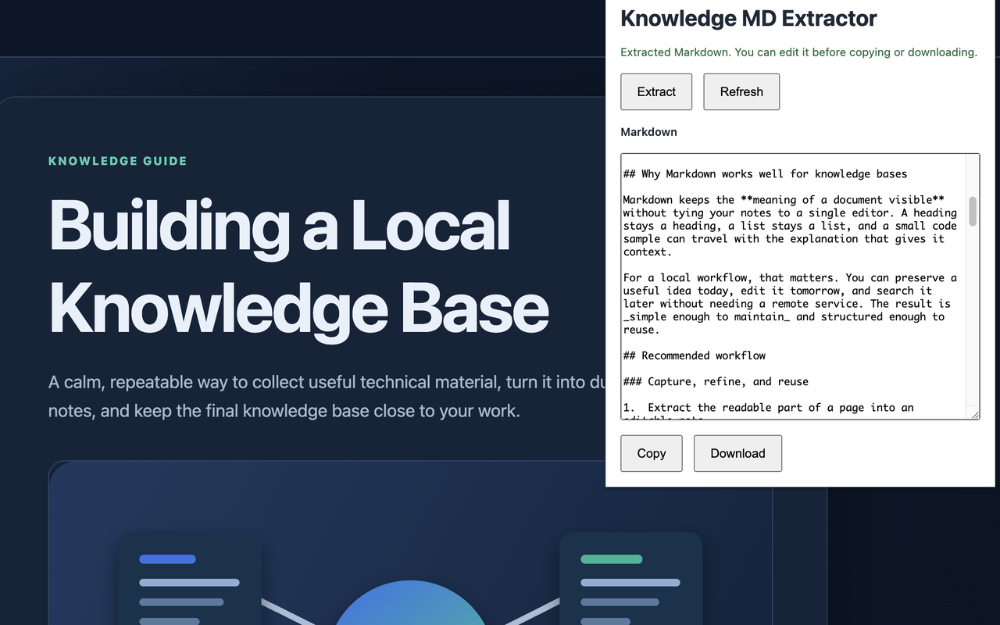
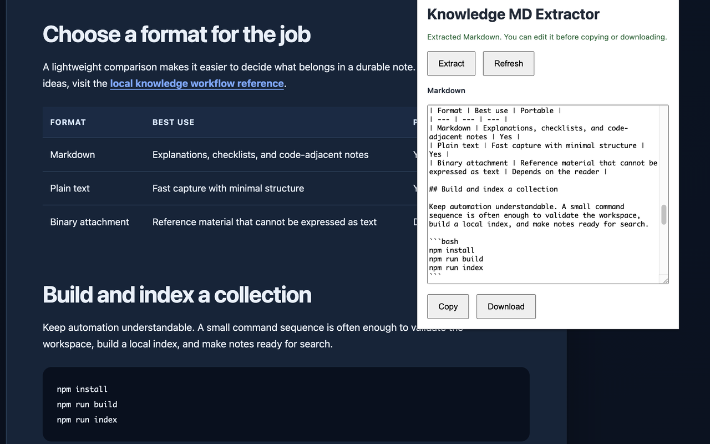
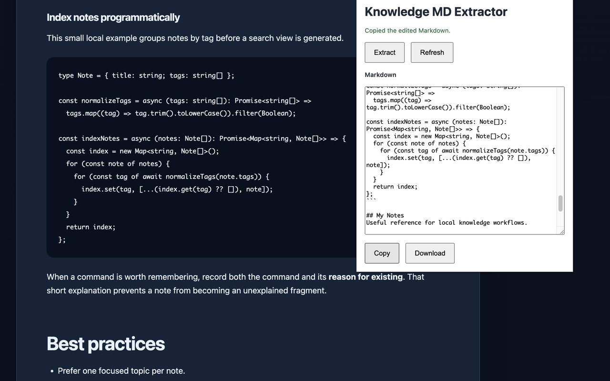
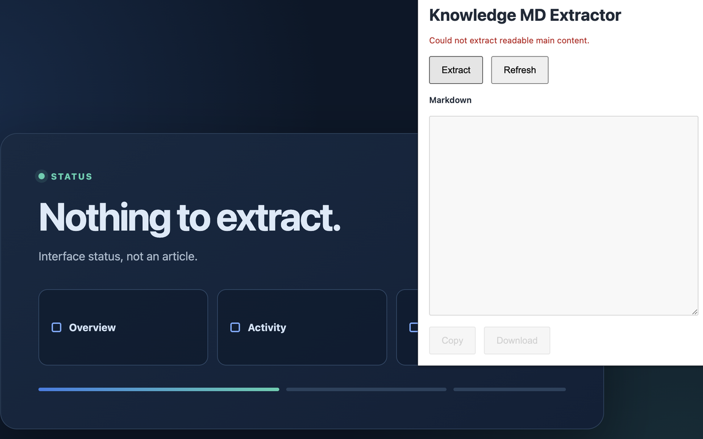

Knowledge MD Extractor
Turn web pages into editable Markdown.
Extract readable web content while preserving headings, tables, code blocks, links, and images.
Local processing. No analytics, telemetry, or AI services.
Focused workflow
Readable pages, useful Markdown.
Capture a page, refine the result in the popup, and move it into the tools you already use.
-
01
Structured extraction
Preserve headings, tables, links, images, and fenced code blocks.
-
02
Useful metadata
Add YAML frontmatter with the source URL and UTC capture time.
-
03
Editable output
Edit the extracted Markdown before copying or downloading it.
-
04
Local by design
Process page content in Chrome without external network requests.
Use cases
A clean starting point for your notes.
Product preview
Extract, inspect, edit, and save.
Knowledge MD Extractor keeps the workflow visible and under your control.




Privacy
Everything runs locally in Chrome.
Page content and generated Markdown stay on your device unless you choose to copy or download the result.
Read the Privacy Policy- No page content is sent to external services
- No analytics
- No telemetry
- No AI services